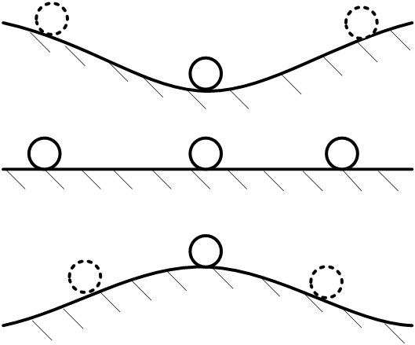
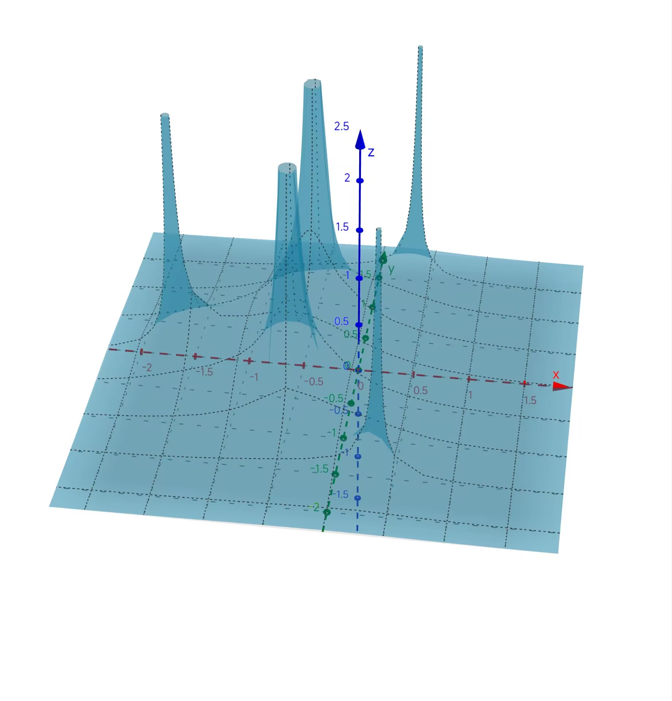
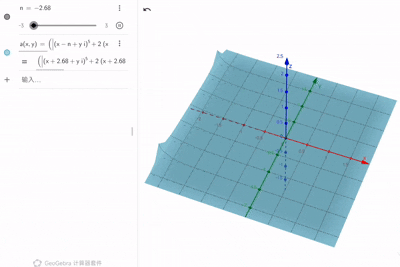

本章主要介绍线性控制系统的时域分析方法，重点讲解稳定性分析的基本概念、劳斯判据的原理与应用，以及相对稳定性的定量分析。
本章学习目标
- 掌握控制系统稳定性的基本概念和类型
- 理解线性系统稳定性的充要条件
- 掌握劳斯判据的原理和应用方法
- 学会构建和解读劳斯表
- 掌握相对稳定性的分析方法
- 能够应用劳斯判据进行系统参数设计
章节内容概述
3.1.1 学习回顾与控制系统概述
3.1.2 稳定性分析的基本概念
3.1.3 闭环系统的传递函数
3.1.4 劳斯判据的原理与构建
3.1.5 劳斯表的特殊情况和处理方法
3.1.6 相对稳定性分析
3.1.7 实践练习与小结
笔记说明：本笔记基于PPT内容整理，补充了必要的公式推导和解释说明，确保内容完整性。
学习回顾与控制系统概述
线性系统的数学模型回顾
-
线性系统的内涵及一般系统的线性化：
- 叠加原理
- 泰勒展开线性化方法
-
拉普拉斯变换/逆变换：
- 定义与基本性质
- 应用：信号转换（性质+部分分式法）、微分方程求解
-
微分方程及其传递函数表示：
- 传递函数与信号像函数的区别
- 传递函数的零极点概念
-
线性系统的结构框图表示及其简化：
- 结构框图四要素：方框、有向线、求和点、引出点
- 三种基本形式及其传递函数：串联、并联、反馈
- 简化方法：梅森公式
-
典型物理系统的频域建模方法：
- 电路系统建模
- 机械系统建模
- 倒立摆动力学系统建模
控制系统的概念与内涵
-
控制论与控制理论：
- 经典控制理论
- 现代控制理论
-
系统的内涵与分类方式：
- 线性/非线性系统
- 单变量/多变量系统
- 定常/时变系统
- 集中参数/分布参数系统
- 连续/离散系统
-
控制系统的基本结构与组成：
- 开环（前馈）控制
- 闭环（反馈）控制
- 正反馈/负反馈
- 受控对象、测量变换、控制器与执行机构
-
控制系统的设计目的与要求：
- 设计要求：稳、准、快
- 性能指标：定性/定量，稳态/暂态
稳定性分析的基本概念
稳定性的定义
稳定性：系统受到扰动后其运动保持在有限边界的区域内或回复到原平衡状态的性能。
分析稳定性的两个基本条件
- 存在平衡状态（理论上）
- 存在扰动（实际情况）
稳定性的三种基本类型
- 稳定：系统受到扰动后能够回复到原平衡状态
- 临界稳定：系统受到扰动后保持有界运动但不回复
- 不稳定：系统受到扰动后运动无界

具有稳定性的两种形式
- 运动有界：系统响应保持在有限范围内
- 回复到原平衡状态：系统最终回到初始平衡点
线性系统与非线性系统的稳定性区别
- 非线性系统：存在多个平衡点，稳定性是相对于特定平衡点的
- 线性系统：平衡点只有一个，稳定性是全局的
渐进稳定性与全局渐进稳定性
- 渐进稳定性：当时间趋于无穷大时，受扰运动均回复到原平衡状态
- 全局渐进稳定性：对于任意初始扰动引起的受扰运动，系统均是渐进稳定的
重要结论：线性系统的稳定即是全局渐进稳定。
线性系统稳定性的充要条件
充要条件：系统特征方程的根全部具有负实部（传递函数的极点全部具有负实部）。
数学表达：对于特征方程
系统稳定的充要条件是所有根满足：
理解：负实部保证了系统的响应随时间衰减，这是稳定性的数学本质。
闭环系统的传递函数
单位负反馈系统
对于典型的反馈控制系统：
R(s) → ⊕ → [G(s)] → Y(s)
↑ (-) ↓
└──[H(s)]←─┘
当时，称为单位负反馈系统。
闭环传递函数
对于负反馈系统：
对于正反馈系统：
特征方程
系统的特征方程为：
其中负反馈取"+"，正反馈取"-"。
劳斯判据的原理与构建
劳斯判据解决的问题
当系统的阶数大于4时，直接求解特征方程的根非常困难。劳斯判据提供了一种代数方法，无需计算根的具体值，仅通过特征方程的系数即可判断根的分布。
系统稳定的必要条件
考虑特征多项式：
系统稳定的必要条件是：所有系数（或同号）。
劳斯表的构建步骤
Step 01：确定劳斯表的行数
对于n阶系统，劳斯表有n+1行。
Step 02：填充前两行
从最高阶项系数开始，按照从上到下、从左到右的顺序填充：
- 第一行：
- 第二行：
Step 03：计算后续行
从第三行开始，应用规则计算：
其中表示第i行第j列的元素。
记忆口诀：固首移尾、负行列式、左下归一。
劳斯判据
劳斯判据：劳斯表首列极性变换的次数 = 特征方程根位于右半平面的数目。
- 无极性变化：所有根位于左半平面，系统稳定
- 有极性变化：有根位于右半平面，系统不稳定
- 极性变化次数：右半平面根的个数
劳斯表的特殊情况和处理方法
情况一：首列出现零元素
处理方法1：用极小量ε代替
用一个小正数ε代替0，继续计算劳斯表，然后令ε→0判断符号。
处理方法2：构建对偶多项式
构建对偶多项式，然后对应用劳斯判据。
情况二：某一行全为零
原因分析
某一行全为零表明存在纯偶数阶多项式为原多项式的因式。
处理方法
- 用上一行构建辅助多项式
- 对求导得到
- 用的系数代替全零行
- 继续计算劳斯表
辅助多项式的根分布特点
纯偶数阶多项式的根必然关于原点对称且关于实轴对称：
- 一对实根（在实轴上，互为相反数）
- 一对纯虚根（在虚轴上）
- 两对关于原点对称的复根
示例分析
示例 3.1.4：基本劳斯表构建
对于多项式：
劳斯表：
| 列1 | 列2 | 列3 | |
|---|---|---|---|
| 1 | |||
| 0 | |||
其中：
示例 3.1.5：劳斯判据应用
对于多项式：
劳斯表：
| 1 | 31 | |
|---|---|---|
| 10 | 1030 | |
| -72 | 0 | |
| 1030 |
分析：首列符号变化：+ → + → - → +，极性变换两次，说明有2个根在右半平面。
示例 3.1.7：首列出现零的情况
对于多项式：
劳斯表（用ε代替0）：
| 1 | 3 | 5 | |
|---|---|---|---|
| 2 | 6 | 3 | |
| ε | 0 | ||
| 3 | |||
| ... | |||
| ... |
令ε→0⁺，，极性变换两次，说明有2个根在右半平面。
这是使用GeoGebra绘制的复平面内极点图，因为多项式的极点比零点更直观，所以将多项式取倒数，绘制图像如下：

可以看到的确在右半平面有两个极点。
相对稳定性分析
相对稳定性的概念
相对稳定性：系统极点向右平移多少，右半平面会出现极点。它量化了系统的"稳定程度"。
分析方法
- 平移变换：令，将原特征方程转换为关于z的方程
- 应用劳斯判据：对变换后的方程定临界值**：找到使系统变为临界稳定的σ值
相对稳定性指标
σ值可以作为稳定性的定量指标：
- σ越大，系统相对稳定性越好
- σ=0对应临界稳定
- σ<0表示系统不稳定
示例：相对稳定性计算
已知闭环系统传递函数：
特征方程：
令，代入得：
劳斯表：
| 1 | 0 | |
|---|---|---|
| 1 | 0 | |
| 0 |
分析：系统在平移2个单位后变为临界稳定，因此相对稳定性指标σ=2。
理解：冲击响应乘以（扩幅）后为临界稳定，说明原系统有2个单位的稳定裕度。

劳斯判据在系统设计中的应用
参数稳定性分析
对于含参数的系统，劳斯判据可用于确定使系统稳定的参数范围。
设计步骤
- 确定特征方程：建立以参数为系数的特征方程
- 构建参数化劳斯表：构建包含参数的劳斯表
- 确定稳定范围：根据劳斯判据，确定无极性变化的参数范围
示例 3.1.8：参数K的稳定性范围
已知系统特征方程：$s^3 + 3s^2 + (2+K)s +：
| 1 | ||
|---|---|---|
| 3 | ||
| 0 | ||
稳定条件：
- 首列全为正：，，
- 解得： 且 ，即
示例 3.1.9：单位负反馈系统的K范围
开环传递函数：
闭环特征方程：
劳斯表：
| 1 | 5 | |
|---|---|---|
| 6 | K | |
| 0 | ||
| K |
稳定条件：
- ⇒
- 综合得：
实践练习
练习 3.1.2：劳斯表构建
请根据多项式构建劳斯表。
解答：
劳斯表：
| 1 | 2 | |
|---|---|---|
| 3 | 7 | |
| 0 | ||
| 7 |
分析：首列符号变化：+ → + → - → +，极性变换两次，系统不稳定，有2个根在右半平面。
练习 3.1.3：参数稳定性分析
已知系统特征方程：，求使系统稳定的k取值范围。
解答：
劳斯表：
| 1 | 2 | |
|---|---|---|
| 3 | k | |
| 0 | ||
| k |
稳定条件：
- 首列全为正：，，
- 解得： 且
- 综合得：
理解：当在0到6之间时，系统稳定；时系统临界稳定；或时系统不稳定。
练习 3.1.4：特殊情况的处理
已知系统特征方程：，判断系统稳定性。
解答：
劳斯表：
| 1 | 6 | 8 | |
|---|---|---|---|
| 7 | 42 | 56 | |
| 0 | 0 | 0 |
出现全零行，构建辅助多项式：
用系数代替全零行：
| 1 | 6 | 8 | |
|---|---|---|---|
| 7 | 42 | 56 | |
| 28 | 84 | 0 | |
| 21 | 56 | ||
| 0 | |||
| 56 |
分析：首列全为正，无极性变化，但存在全零行表明有纯虚根。辅助多项式的根为，即。系统有4个纯虚根和1个左半平面实根，属于临界稳定。
练习 3.1.5：相对稳定性分析
已知系统传递函数：，求系统的相对稳定性指标σ。
解答：
特征方程：
令，代入得：
展开并整理：
应用劳斯判据，求使系统临界稳定的σ值：
劳斯表：
| 1 | ||
|---|---|---|
| 0 | ||
其中：
令，解得
结论：相对稳定性指标σ=0.59，系统有0.59个单位的稳定裕度。
小结与总结
核心概念总结
-
稳定性定义：系统受到扰动后其运动保持在有限边界区域内或回复到原平衡状态的性能。
-
稳定性类型：
- 稳定：回复到原平衡状态
- 临界稳定：保持有界运动但不回复
- 不稳定：运动无界
-
线性系统稳定性充要条件：特征方程的所有根具有负实部（传递函数的所有极点位于左半平面）。
-
劳斯判据：基于特征方程系数的代数稳定性判据，无需计算根的具体值。
重要方法总结
劳斯表构建方法
- 确定行数：n阶系统→n+1行
- 填充前两行：按幂次交错填充系数
- 计算后续行：应用"固首移尾、负行列式、左下归一"规则
特殊情况处理
- 首列出现零：
- 方法1：用极小量ε代替，令ε→0判断
- 方法2：构建对偶多项式
- 某行全为零：
- 构建辅助多项式
- 对求导得
- 用系数代替全零行
参数稳定性分析
- 建立含参数的特征方程
- 构建参数化劳斯表
- 根据首列符号确定参数稳定范围
相对稳定性分析
- 令进行平移变换
- 对变换后的方程应用劳斯判据
- 确定使系统临界稳定的σ值
关键公式回顾
-
闭环传递函数（负反馈）：
-
特征方程：
-
劳斯表元素计算：
-
相对稳定性变换：
学习要点
- 理解稳定性物理意义：不仅掌握数学判据，更要理解稳定性的物理本质
- 熟练构建劳斯表：通过大量练习掌握劳斯表的构建技巧
- 掌握特殊情况处理：能够正确处理首列为零和全零行的情况
- 应用参数分析：能够应用劳斯判据进行系统参数设计
- 理解相对稳定性：掌握稳定性程度的定量分析方法
工程应用价值
- 控制系统设计：确保设计的控制系统稳定
- 参数整定：确定控制器参数的稳定范围
- 稳定性评估：评估现有系统的稳定裕度
- 故障诊断：通过稳定性分析诊断系统问题
- 鲁棒性设计：考虑参数变化时的系统稳定性
常见错误与注意事项
- 系数符号错误：确保特征方程系数正确
- 劳斯表计算错误：仔细检查行列式计算
- 特殊情况处理不当：正确识别和处理特殊情况
- 参数范围遗漏：检查所有不等式条件
- 物理意义忽视：不要只做数学计算，要理解物理意义
稳定性分析是控制系统设计的基石，劳斯判据作为经典的代数稳定性判据，在工程实践中具有重要应用价值。通过本章学习，应能熟练应用劳斯判据进行系统稳定性分析和参数设计，为后续的控制器设计奠定基础。